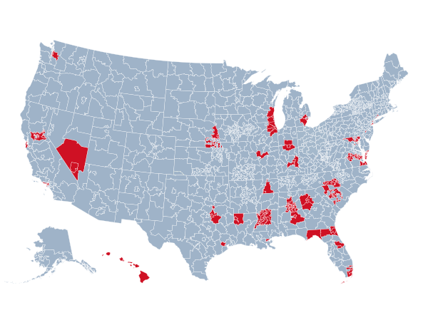
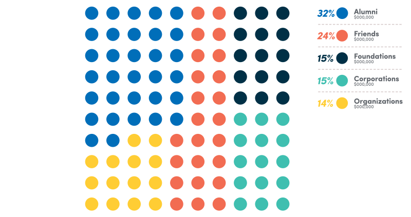
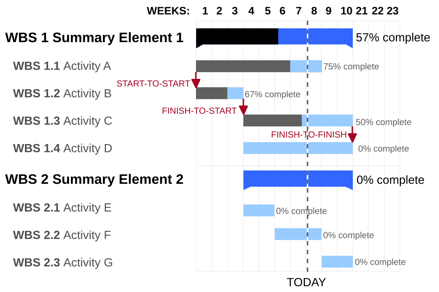
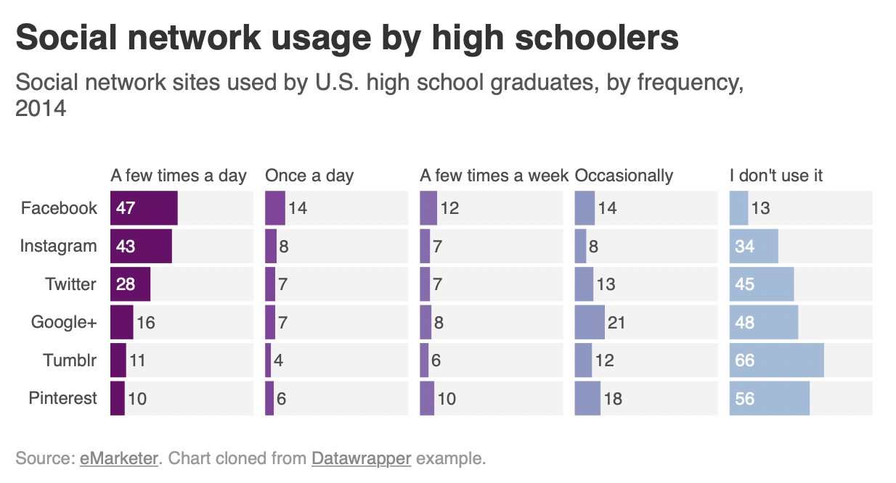
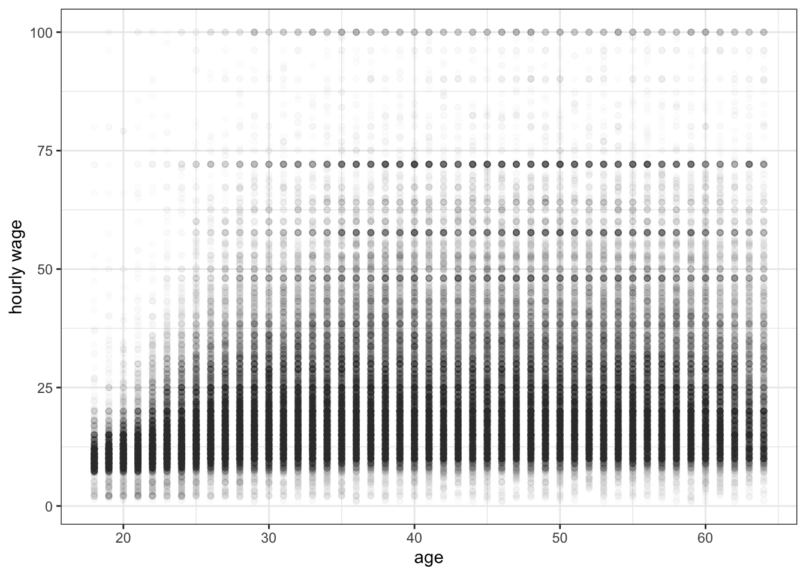
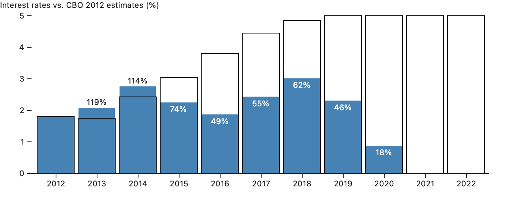

Reference
Data Visualization Glossary
Common terms used when working with data
Presented below are common terms you may hear when talking about charts, data, and stats. This page is meant to
be used as a reference: jump to a term from the list, or press Ctrl + F (⌘ + F on a Mac)
to search. It began as a crowd-sourced glossary on Observable, and The Data Visualisation Catalogue goes deeper on most
of the charts. Charts are by Justin unless credited. Enjoy! 🤓
Aggregation
Aggregation rolls many rows up into one number, such as a sum, a count or an average. It makes patterns visible and hides everything underneath, so check what got averaged away.
Annotation
An annotation is a note written on the chart itself: an arrow, a label, a line marked “paywall introduced”. It tells people what to look at, and often does more than the title.
Anscombe’s quartet
Anscombe’s quartet is four datasets with nearly the same mean, variance and correlation that look nothing alike once you plot them. It’s the best argument for drawing the chart first. More here.
Area chart
An area chart is a line graph with the space below filled in, which gives a sense of volume. Start the axis at zero, or the filled part means nothing. There are some on Charts on the Internet.
Axis
An axis is the scale a chart is read against. Bars need one that starts at zero. Lines can start elsewhere, as long as the axis says so.
Bar chart

Status of World Nuclear Forces 2021
A bar chart gives each category a bar, and the length of the bar is its value. Every bar starts from the same line, so lengths are easy to compare, as long as that line is zero. For box plots, bubble charts and many more, see Charts on the Internet.
I like this chart because it appears that an individual named Jeff is in possession of ~10 nuclear bombs. Thankfully there is no Jeff — JEFF stands for ‘Joint Evaluated Fission and Fusion File’ (JEFF). It is a collaboration to get accurate data on fusion and fission. Data is accurate as of June 2021 and is provided by the Federation of American Scientists.
Cardinality
The cardinality of a set is how many different things are in it: A = {2, 4, 6} has a cardinality of 3. In a dataset, a column with few distinct values, like state, is low-cardinality. One where nearly every value is different, like email, is high-cardinality, and makes for a terrible color legend.
Cartesian coordinates 📍

Cartesian coordinates pin down a point with one number per axis. On a flat chart that’s two: how far across, and how far up. If you can picture the game Battleship, you’re mostly there.
Categorization
Categorization sorts values into groups so you can count or compare the groups. Instead of plotting every age, you might split people into under 50, and 50 or older.
Chord diagram

A chord diagram shows how the members of a group are connected. Each one gets a stretch of the circle’s edge, and ribbons cross the middle between those that share something. The wider the ribbon, the stronger the link.
Technically, the chart above is an adaptation of a standard chord diagram, but I think it’s too cool not to share. Nadieh Bremer made it, and it plots dialogue from the Lord of the Rings by character and place.
Choropleth map

A choropleth map colors each region by its value. It’s good for spotting where things are high or low, and bad for reading exact numbers. Big, empty regions also steal attention from small, crowded ones. Map a rate, such as people per square mile, or you’ll mostly be showing which regions are large.
Correlation

Correlation measures how closely two sets of values move together. It’s positive when they rise together, negative when one falls as the other rises, and near zero when there’s no straight-line pattern. It can’t tell you whether one causes the other.
Data exploration 🔎
Data exploration is getting to know a dataset before you commit to a question. What’s missing? What’s typical? What looks odd? Most of the answers will be dull, and one or two will be the story.
Data mining
Data mining means digging through a lot of data for patterns someone can act on. The digging takes in cleaning, modeling and checking, and none of it counts until somebody who can use the findings understands them.
Data pipeline

A data pipeline is a chain of steps, each handing its results to the next: fetch, clean, reshape, load, chart. Once it runs on its own, the chart can update itself, at least until something upstream changes.
Data wrangling
Data wrangling is getting messy data into a shape you can use: fixing formats, matching names, dealing with gaps and joining tables. Every chart needs some. The New York Times called it “janitor work”, and most of the hours go there.
Dimension
A dimension is one quality of whatever you’re describing. In a table it’s usually a column: age, height, color, date. Below, City and State are two dimensions, and the numbers on the left are row indexes.
| # | Area Code | City | State |
|---|---|---|---|
| 1 | 770 | Atlanta | Georgia |
| 2 | 404 | Atlanta | Georgia |
| 3 | 718 | New York City | New York |
| 4 | 202 | Washington | D.C. |
| 5 | 901 | Memphis | Tennessee |
| 6 | 305 | Miami | Florida |
| 7 | 312 | Chicago | Illinois |
| 8 | 313 | Detroit | Michigan |
| 9 | 215 | Philadelphia | Pennsylvania |
| 10 | 803 | Columbia | South Carolina |
| 11 | 757 | Hampton Roads | Virginia |
| 12 | 504 | New Orleans | Louisiana |
Dot map
A dot map, or dot density map, puts a dot wherever something happens. One dot can be one case, or a set number (1 dot = 10 trees). Clusters jump out; counting them is another matter.
Dot matrix chart

A dot matrix chart draws a total as a grid of dots and colors them by category. You see the shares at a glance, and you could count the dots if you had to.
ETL (Extract, Transform, Load)
ETL is three steps for getting data into a warehouse: extract it from wherever it lives, transform it into something consistent, and load it. It mostly happens out of sight, courtesy of a data engineer. Ask Alyssa for more 😎
Flow chart

A flow chart draws a process as boxes and arrows. Follow the arrows to see what happens next, including where a decision sends you one way or the other.
Gantt chart

A Gantt chart is a project plan laid over a calendar. Each task is a row, with a bar from its first day to its last, so you can see what overlaps and what’s running late. Arrows link a task to the ones waiting on it, and an upright line marks today.
Heat map
Steph Curry’s NBA arena popcorn rankings
A heat map turns numbers into color. In a table like this one, the darker the cell, the higher the score, so patterns across rows and columns show up before you’ve read a single value.
Histogram
How IMDb users rate The Simpsons
A histogram shows how values are spread out. The range is cut into equal slices, called bins, and each bar counts how many values land in its bin. Bars touch because one bin runs straight into the next. Look for where values pile up, which way the pile leans, and any gaps.
Join
A join merges two tables by matching a column they share, such as an ID. An inner join keeps only the rows that match. A left join keeps everything in the first table, matched or not.
Kagi chart
A Kagi chart follows a price and ignores the calendar. The line keeps going while the price moves one way, and turns only after a big enough reversal, so small wobbles disappear. It gets thicker or thinner when the price breaks an earlier high or low.
Line graph
My excitement levels as my girlfriend says...
A line graph joins up values in order, usually over time. The slope does the talking: up, down or flat, and how fast. With more than a few lines it turns to spaghetti, so try small multiples instead.
Marimekko chart
Who survived the Titanic
A Marimekko chart, or mosaic plot, is a stacked bar chart with bars of different widths. Here the width is each group’s size and the height is the share saved, so the area of a tile is a number of people. It gives a good overall picture, but tiles that don’t line up are hard to compare.
Mean
The mean, or average, is the total divided by how many values there are. One extreme value can drag it a long way, so look at the median too.
Median
The median is the one in the middle once values are sorted, or the average of the middle two. Half the values fall on either side, so extremes barely move it. If it’s a long way from the mean, go looking for outliers.
Mind map
A mind map starts with one idea in the center and grows branches, which grow branches of their own. It’s less a way to show data than a way to think on paper.
Moving average
The value of Apple stock, 2013 to 2018
A moving average smooths a jagged line by averaging each value with its neighbors. This one is trailing: each day is averaged with the 49 trading days before it, so it lags behind the price. A longer window is smoother and slower to react.
Multi-set bar chart

A multi-set bar chart, also called grouped or clustered, sets bars for several series next to each other in every category. Comparing inside a group is easy. Following one series from group to group is harder.
Network diagram
A network diagram draws things as dots (nodes) and their connections as lines (links). Arrows mark links that only go one way, and size or thickness can carry another number. Add too many nodes and you get what’s known as a hairball.
Nightingale rose chart

Florence Nightingale made this chart famous, using it to show how many soldiers in the Crimean War died of causes that could have been prevented. Every wedge has the same angle and its area carries the value. Most people judge by how far a wedge sticks out, and get it wrong.
Normalize
To normalize values is to put them on one scale so they can be compared. Film ratings out of 5, 10 and 100 can all be stretched to run from 0 to 100.
NULL
NULL means there’s no value. It might be unknown, missing or not applicable, but it isn’t zero, and it isn’t an empty piece of text. Most sums that touch a NULL come out as NULL.
Outlier
An outlier is a value a long way from the others. It’s either a mistake or the most interesting thing you’ve got, so find out which before you drop it.
Overplotting

Overplotting is when marks land on top of one another and you can’t tell how many there are. Too many points will do it, and so will rounded values. Make the dots smaller or see-through, nudge them apart at random, or count them in bins.
Pictogram chart
A pictogram chart counts with pictures. An icon stands for one thing, or a fixed number of things, so people see the subject along with the amount. Keep the icons one size, or the big ones will seem to count for more.
Pie chart
A pie chart cuts a circle into slices, one for each share of the total. It works with two or three slices of very different sizes. Past that, angles are hard to judge and a bar chart is clearer.
Piled bar chart

A piled bar chart squeezes a long, sorted list into a few rows. Bars lie on top of each other from the same starting line, with the shorter ones drawn thinner and in front.
Pivot
To pivot data is to spread the values of one column across the top of a table, then fill in the cells with totals, counts or averages. A spreadsheet’s pivot table does it by drag and drop, and it’s a quick way to find out what’s behind a number.
Population pyramid
Population of Qatar by age and sex
A population pyramid puts two bar charts back to back, men on one side and women on the other, with age running up the middle. A wide base means lots of births, and a narrow one means an aging country. Qatar’s bulge is mostly men who came there to work.
Radar chart
A radar chart, also called a spider or web chart, gives every variable its own axis out from the center and joins the values into a shape. It suits profiles, like a player’s skills, when everything’s on one scale. Reorder the axes and the shape changes, so don’t read too much into it.
Relationship
A relationship is any pattern that ties variables together, such as a stock rising with the wider market. A chart can show you one. Explaining it is your job.
Sample

A sample is the part you measure so you can say something about the whole. A poll might question 1,000 Greeks to learn what Greece thinks. It only works if the sample looks like the population, which is why picking at random matters.
Sankey diagram

A Sankey diagram follows amounts as they split and merge. The thicker the band, the more is flowing, whether that’s energy, money or visitors to a website.
Scatterplot
The Simpsons and IMDb score
A scatterplot puts a dot where two values meet. Dots that drift along a line suggest the two are related, and dots that form a cloud suggest they aren’t. The closer they hug the line, the stronger the correlation.
Span chart
A span chart, or floating bar chart, draws a bar from a category’s lowest value to its highest. You learn the two ends and the distance between them, and nothing about the middle.
Spike histogram
A spike histogram has so many bins, often 100 or more, that its bars shrink to thin lines. Gaps, repeats and rounding that a normal histogram would smooth over become visible.
Stacked area graph
Unemployment by industry over time
A stacked area graph piles one series on another, so the top edge is the total and each band is a part of it. Only the bottom band sits on a flat line, which makes the rest hard to read by themselves.
Stacked bar graph
A stacked bar graph cuts each bar into parts. Ordinary stacks compare totals. In a 100% stack the bars are all one length, so what you compare is shares. Put the part you care about most at the bottom, where it lines up.
Standard deviation
The standard deviation, written σ, is roughly how far values tend to sit from the mean. It’s the variance’s square root, which puts it back in the data’s own units. When values follow a bell curve, about 68% are within one σ of the mean.
Statistical significance
A result is statistically significant when it would be surprising if there were no real effect, usually something you’d see less than 5% of the time. It isn’t the odds that you got lucky, and it doesn’t mean the effect is big enough to care about.
Stem and leaf plot
4 | 366677899 5 | 000111223444445555566677778889 6 | 00111122244455679 7 | 0388
A stem and leaf plot is a histogram you can type. Split each number into a stem (here, the tens) and a leaf (the ones), and line the leaves up beside their stem. The rows show the shape, and you can still read every value.
Table
A table sets data out in rows and columns, like the one above. When people need exact values, or you only have a few numbers, it beats a chart.
Target vs actual chart

A target vs actual chart fills a hollow bar, the target, with a solid one, the result. Here, interest rates are measured against what the Congressional Budget Office expected in 2012.
Time series
Apple (AAPL) stock price, 2013 to 2018
A time series is a run of values in the order they happened, like a share price every day or the temperature every hour.
Timeline

A timeline sets out events along a line, first to last. Drawn to scale, it also shows how long things lasted and how far apart they were.
Timetable
A timetable is a table of when things happen: trains, classes, films. People come to look up one thing, so the order of the rows matters more than the design.
Tree diagram
A tree diagram shows a hierarchy. One root splits into nodes, those split again, and the ends that don’t split any further are the leaves.
Treemap
A treemap fills a rectangle with smaller ones, each sized by its value, and can nest them to show levels. Ben Shneiderman invented it to find out what was filling up a hard drive. It packs in a lot, though the levels are easier to follow in a tree diagram.
Trellis
A trellis, or set of small multiples, repeats one chart for every category, all on the same scale. Run your eye across the grid and the odd one out is obvious, which it wouldn’t be in a single crowded chart.
Venn diagram
A Venn diagram draws sets as circles that overlap. The overlap is what they have in common, and every combination gets a region, even if nothing’s in it. There are some here.
Violin plot
A violin plot draws a distribution as a smooth shape with its mirror image beside it, often with a box plot inside. Two humps that a box plot would hide are plain to see. With little data, though, the smoothing can make up bumps that aren’t there.
Word cloud
A word cloud sizes words by how often they turn up. It’s eye-catching and imprecise: long words look more important, and where they land means nothing. They may be considered harmful.
Wrapped bar chart

A wrapped bar chart folds a bar that’s too long to fit, so that small values stay visible beside huge ones. The one above takes after W.E.B. Du Bois, who was folding bars in 1900.
XY chart
An XY chart places points using two numbers, one per axis. The scatterplot is the usual kind. Size the points by a third number and you have a bubble chart, and color or shape can add a category.